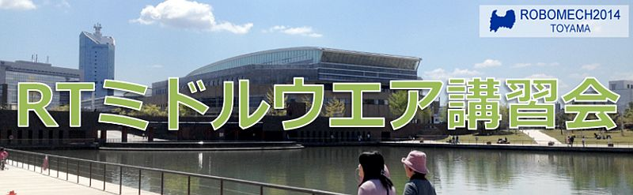

ROBOMECH2014講習会(2014年5月25日)
✏️ Edit this page on GitHubContents

#contents
ROBOMEC2014講習会
2014年5月25日(日) に富山市の富山国際会議場において、ROBOMECでのRTミドルウエア講習会を開催いたしました。
日時・場所
- 主催: (独)産業技術総合研究所
- 協賛: (公社)計測自動制御学会システムインテグレーション部門
- 日時: 2014年5月25日(日), 10:00～16:45
ROBOMEC2014チュートリアルとして開催 - 場所: 富山国際会議場 (ROBOMECH2014の本会場：富山市総合体育館とは異なりますのでご注意ください。)
- アクセス: 交通アクセス
- 詳細はROBOMEC2014 Webページをご覧ください。
- 参加者: 第1, 2部24名、実習15名（+講師・スタッフ9名）
プログラム
| 10:00 -10:50 | **第1部(その1)：インターネットを利用したロボットサービスとRSiの取り組み** **担当**：成田雅彦 先生 (産業技術大学院大学) **概要**：プラットフォーム化したロボットの各種機能モジュールのオープン化が進む一方，ネット企業によるロボット企業の買収などの気になる変化も続いています。本講演では，インターネットやクラウドとロボットとの連携、RSi（ロボットサービスイニシアティブ）の実証や試作などの取り組みを紹介し、今後を展望したいと思います。 **講義資料**:140525-01.pdf |
| 11:00 -11:50 | **第1部(その2)：OpenRTM-aistおよびRTコンポーネントプログラミングの概要** **担当**：原功 氏 (産総研) **概要**：RTミドルウエアはロボットシステムをコンポーネント指向で構築するソフトウエアプラットフォームです。RTミドルウエアを利用することで、既存のコンポーネントを再利用し、モジュール指向の柔軟なロボットシステムを構築することができます。RTミドルウエアの産総研による実装であるOpenRTM-aistについてその概要およびRTコンポーネントの機能やプログラミングの流れについて説明します。 **講義資料**:140525-02.pdf |
| 11:50 -12:00 | 質疑応答・意見交換 |
| 12:00 -13:00 | 昼食 |
| 13:00 -15:00 | **第2部: RTコンポーネントの作成入門** **担当**：坂本武志 氏 (株式会社グローバルアシスト) **概要**：RTシステムを設計するツールRTSystemEditorおよびRTコンポーネントを作成するツールRTCBuilderの使用方法について解説するとともに、RTCBuilderを使用したRTコンポーネントの作成方法を実習形式で体験していただきます。 **講義資料**:140525-03.pdf |
| 15:00 -16:45 | **第3部：プログラミング実習** 担当：原功 氏 (産総研)、Geoffrey Biggs 氏 (産総研)、坂本武志 氏 (株式会社グローバルアシスト) **概要**：OpenRTM-aistを利用して画像処理コンポーネントを作成します。また、USBメモリ起動のコンポーネントを利用した利用例について体験して頂きます。 **講義資料**:140525-04.pdf |
必要機材
第2,3部の実習には以下の準備が必要です。
- ノートPC
- OS: Windowsをご用意下さい
- Eclipseが動作する程度のスペックが必要です
- メモリ: 1GB以上
- CPU: Core2Duo以上
- HDD空き: 5GB以上 (Visual C++ Expressの場合)
- USBカメラ (USBカメラ無しで申込まれた方には貸与いたします)
Windowsのファイアウォールは必ず切っておいてください。;
必要ソフトウエア
- Visual C++ 2010
- 無料のExpress版が こちら からダウンロードできます。
- インストールには時間がかかりますので、ご注意ください。
- VC2012, VC2013には対応していません。また、VC2008は少々古いのでお勧めいたしません。
- OpenRTM-aist-1.1.0 C++版
- インストールされているVCに一致するバージョンをダウンロードしてください。;
- 64bit版はPythonとの相性が悪いので、32bit版をお勧めします。
- OpenRTM-aist-1.1.0-RC1 Python
- Python 2.6(32bit)
- PyYAML
- CMake
- Doxygen
- JDK
- 32bit版をお勧めします。
- Eclipse全部入り
- Windows用32bit版全部入りを推奨します。
- インストール後、メニューの「ヘルプ」→「新規ソフトウエアのインストール」を選択、更新サイトに http://openrtm.org/pub/openrtp/releases/updates を入力してRTSystemEditorとRTCBuilderをアップデートしておくことをお勧めします。
- 使い慣れたエディタ: EclipseやPythonに付属のエディタでも構いませんが、使い慣れたエディタが入っていた方が良いでしょう
- RTC.xml 第2部で使用します。
講義資料
第1部（その１） インターネットを利用したロボットサービスとRSiの取り組み
第1部（その２） OpenRTM-aistおよびRTコンポーネントプログラミングの概要
第2部 RTコンポーネントの作成入門
第3部 プログラミング実習
講習会の様子
{kind=link}
{kind=link}
{kind=link}
{kind=link}
{kind=link}
&aname(comment);